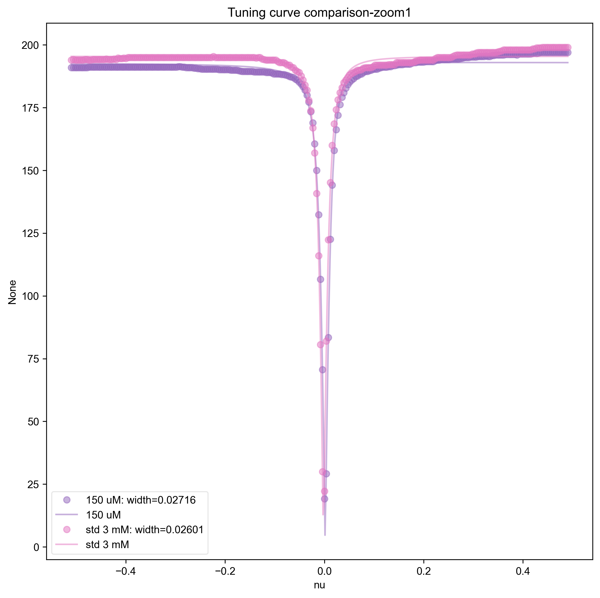
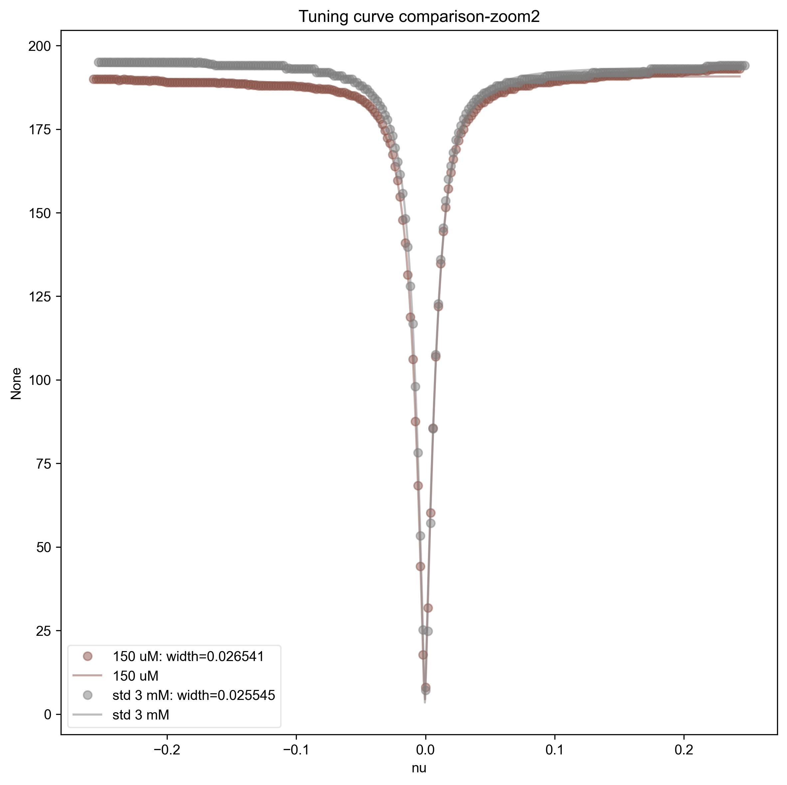

Note
Go to the end to download the full example code
Processing the Captured Tuning Curve¶
Takes the npz file of the captured tuning curve at different zoom levels and plots them on the same plot, allowing us to look at any drift or discrepancies of the tuning curve.
This also fits the tuning curves to a Lorentzian for more detailed comparison, and gives the width in the legend. Note that if we converted the x-axis here (which is determined by Bruker XEPR) to actual frequency units, then we could convert this width to a Q factor.
- 
- 
1: Tuning curve comparison-zoom1 |||None
2: Tuning curve comparison-zoom2 |||None
import sympy as sp
from pyspecdata import figlist_var, nddata, search_filename, lmfitdata
import numpy as np
c_re, c_im, A, ll, nu, nu0 = sp.symbols(
"c_re c_im A lambda_L nu nu_0", real=True
)
with figlist_var() as fl:
for filename, thislabel in [
("220808_150uM_TEMPOL.npz", "150 uM"),
(
"220114_3mM_TEMPOL_3b.npz",
"std 3 mM",
), # this is our control so don't change! You want your tuning curve
# to match this one
]:
# {{{Load in npz file
thisfile = search_filename(
filename,
exp_type="francklab_esr/alex", # adjust the exp_type according to
# your personal folder
unique=True,
)
data = np.load(thisfile)
# }}}
# {{{Go over range of zooms and plot against control
for j in range(3):
if j == 0:
pass
else:
nd_data = {}
zoom_data = data["zoom%d" % j].squeeze()
zoom_data_nd = nddata(zoom_data[0], "frequency")
zoom_data_nd.setaxis("frequency", zoom_data[1])
nd_data["zoom%d" % j] = zoom_data_nd
shift_val = zoom_data_nd.argmin()
zoom_data_nd.setaxis(
"frequency", lambda x: x - shift_val["frequency"]
)
fl.next("Tuning curve comparison-zoom%d" % j)
zoom_data_nd.rename("frequency", "nu")
zoom_data_nd = lmfitdata(zoom_data_nd)
zoom_data_nd.set_plot_color_next()
zoom_data_nd.functional_form = abs(
c_re + 1j * c_im - A / (1 + 1j * 2 * (nu - nu0) / ll)
)
zoom_data_nd.set_guess(
A=200, c_re=200, c_im=0, lambda_L=0.03, nu_0=0
)
zoom_data_nd.fit(use_jacobian=False) # the Jacobian seems to
# contain NaN values. The
# rigorous way to rectify
# this would be to use the
# transform methodology
# and define the
# Lorentzian in the
# inverse Fourier domain,
# but that seems overkill
# for this application.
fl.plot(
zoom_data_nd,
"o",
label=thislabel
+ f": width={zoom_data_nd.output()['lambda_L']:0.5g}",
alpha=0.5,
)
fl.plot(zoom_data_nd.eval(500), label=thislabel, alpha=0.5)
# }}}
Total running time of the script: (0 minutes 1.086 seconds)